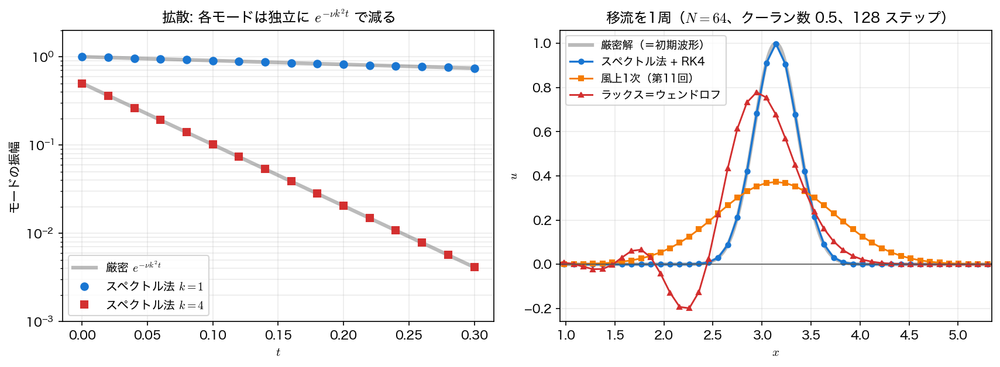

スペクトル法で偏微分方程式を解く
前ページで作った「FFT \(\to\) \(\mathrm{i}k\) 倍 \(\to\) 逆 FFT」を、偏微分方程式の空間微分にそのまま差し込む。第9回の拡散方程式と第11回の移流方程式を、まったく同じ問題設定で解き直し、差分法とどれだけ違うかを数値で見る。
見どころは2つある。1つは拡散方程式がフーリエ空間では厳密に解けてしまうこと。もう1つは、空間の誤差が丸め誤差まで落ちた結果、精度の律速が時間積分に移ることである。差分法では空間の誤差が支配的で、時間刻みは安定性のためだけに小さくしていた。スペクトル法では立場が入れ替わる。
拡散方程式: フーリエ空間では厳密に解ける
周期境界の拡散方程式
の両辺をフーリエ変換する。\(\partial^2/\partial x^2\) は \((\mathrm{i}k)^2=-k^2\) 倍に化けるので、
——波数ごとに完全に分離した1階の線形常微分方程式になり、しかもその厳密解は指数関数である。\(N\) 個のモードが互いに一切影響しない（拡散方程式が線形で、係数 \(\nu\) が定数だからである）。
したがって、次の3段階で任意の時刻 \(t\) の解が1回で求まる。
- 初期条件を FFT して \(\hat u_k(0)\) を得る
- 各 \(k\) について \(e^{-\nu k^2t}\) を掛ける
- 逆 FFT で実空間に戻す
時間刻み \(\Delta t\) は現れない。時間を刻んでいないのだから、時間離散化の誤差も安定条件も存在しない。残るのは (a) 初期条件を有限個のモードで表したことによる打ち切り誤差と、(b) FFT の丸め誤差だけである。初期条件が \(\sin x+\tfrac12\sin4x\) のように有限個のモードで厳密に書けている場合、(a) すら消える。プログラムの最大誤差 \(3.6\times10^{-16}\) は、まさに丸め誤差そのものである。
同じ問題を第9回の FTCS で解くと、\(r=\nu\Delta t/\Delta x^2\le1/2\) の制限があるため \(N=128\) では \(t=0.1\) に到達するのに 167 ステップが必要で、それでも誤差は \(2.6\times10^{-4}\) にとどまる。スペクトル法は \(N=16\)・変換1回で \(5.0\times10^{-16}\) である。
「厳密に解ける」のは線形・定数係数・周期境界だからである
\(\nu\) が場所によって変わる（\(\nu(x)\partial_x u\) の形）だけで、フーリエ空間のモードは結合し、この手は使えなくなる。それでも「線形で定数係数の部分だけをフーリエ空間で厳密に扱い、残りを陽的に進める」という考え方は生き残る（積分因子法）。次節の擬スペクトル法と組み合わせるのが実際の使い方である。
擬スペクトル法: 微分はフーリエ空間、積は実空間
拡散が例外的に簡単なのは、方程式が線形だからである。移流方程式 \(\partial_t u+c\,\partial_x u=0\) も \(c\) が定数なら同様に \(\hat u_k(t)=\hat u_k(0)e^{-\mathrm{i}ckt}\) と解けるが、\(c\) が \(u\) 自身になった途端（バーガース方程式 \(\partial_t u+u\,\partial_x u=\nu \partial_x^2 u\)）、\(u\,\partial_x u\) のフーリエ係数は
という畳み込み和になる。すべての \(k\) について計算すると \(O(N^2)\) ——FFT で稼いだ \(O(N\log N)\) が台無しになる。
そこで実務では、微分だけをフーリエ空間で行い、掛け算は実空間で行う。
- \(\hat u_k\) から \(\mathrm{i}k\hat u_k\) を作り、逆 FFT して実空間の \(\partial_x u(x_j)\) を得る
- 実空間で各点ごとに \(u_j\cdot(\partial_x u)_j\) を掛ける（\(O(N)\)）
- 必要ならまた FFT して次の微分へ
これを擬スペクトル法（pseudospectral method）あるいは選点法（collocation method）と呼ぶ。畳み込みを回避できる代わりに、実空間での積が高波数を作り、前ページのエイリアシングが入り込む。だから 2/3 ルールが必要になる。純粋に畳み込みで計算する方法（ガラーキン法）ならエイリアシングは起きないが、\(O(N^2)\) の代償を払うことになる。速さのためにエイリアシングを引き受け、2/3 ルールで後始末する——これが擬スペクトル法の立ち位置である。
枠組みとしては第9回の線の方法とまったく同じである。空間だけを離散化して \(N\) 元の連立常微分方程式
にし、あとは第4回のルンゲ＝クッタ法で時間を進める。変わったのは \(\mathcal{D}\) の中身だけで、時間積分の枠組みは何も変えなくてよい。これが線の方法の設計としての強みである。
移流方程式と時間刻みの上限
移流方程式を上の枠組みで解く。空間はスペクトル微分、時間は RK4 である。第11回とまったく同じ設定——\(c=1\)、\(u_0(x)=e^{-10(x-\pi)^2}\)、クーラン数 \(0.5\)、\(t=2\pi\) で1周させて初期波形と比べる——を使う。

\(N=64\) での最大誤差は、スペクトル法 \(3.1\times10^{-3}\) に対し風上1次 \(6.3\times10^{-1}\)、ラックス＝ウェンドロフ法 \(4.0\times10^{-1}\) ——それぞれ 約 200 分の1、約 130 分の1である。第11回で見た数値拡散・数値分散が、スペクトル微分ではほとんど発生しない。修正方程式の言葉で言えば、スペクトル微分は打ち切り誤差項そのものを持たないからである。
残った誤差はどこから来るか
\(N=64\) を固定してクーラン数だけを半分ずつ下げると、誤差は \(3.1\times10^{-3}\to1.9\times10^{-4}\to1.2\times10^{-5}\to\cdots\) ときれいに \(1/16\) ずつ減っていく。\(16=2^4\) ——RK4 の4次精度である。
つまり \(N=64\) で残っていた \(3.1\times10^{-3}\) は、空間の誤差ではなく時間積分の誤差だった。空間をスペクトル法にすると、空間の誤差はすぐ丸め誤差まで落ちてしまい、精度の律速が時間積分に移る。差分法では「空間2次・時間2次だから両方を同じ割合で細かくする」と考えたが、スペクトル法では時間積分の次数を上げるほうが効く（実際、高次の RK 法や指数積分法が使われる）。
時間刻みの安定条件
フーリエ空間で見ると、移流の固有値は \(\lambda_k=-\mathrm{i}ck\) ——純虚数である。したがって第6回の絶対安定領域のうち、虚軸上でどこまで伸びているかだけが問題になる。RK4 の虚軸上の限界は
である（オイラー法は虚軸上の限界が \(0\) ——つまりどんなに \(\Delta t\) を小さくしても不安定なので、移流をスペクトル法で解くには最低でも RK3 以上が要る）。
ここで効いてくるのがナイキストモードを \(0\) にしたことである。1階微分では \(k=N/2\) の係数を捨てるので、生きている最大波数は \(N/2-1\) となり、
\(N=64\) では \(0.9294\)、\(N\to\infty\) では \(2\sqrt2/\pi=0.9003\) に落ち着く。プログラムの走査でも、クーラン数 \(0.92\) までは5周期回しても \(\max\lvert u\rvert\approx0.93\) で安定、\(0.94\) で \(5.8\)、\(1.00\) で \(8\times10^{58}\) と明確に発散した。
\(0.93\) は「安定に見えているだけ」である
表では \(0.93\) でも \(\max\lvert u\rvert=0.918\) と何事もないように見えるが、\(0.93\) は理論限界 \(0.9294\) を超えている。\(z=2.8304\) に対する RK4 の増幅率は \(\lvert R(\mathrm{i}y)\rvert=\sqrt{1-y^6/72+y^8/576}=1.0049\) で、確かに \(1\) より大きい。\(344\) ステップで \(5.4\) 倍に増幅される。
それでも見えないのは、増幅されるモード \(k=31\) の初期振幅が \(6.8\times10^{-12}\) しかないからである。\(5.4\) 倍しても \(3.7\times10^{-11}\) で、\(O(1)\) の波形に埋もれる。一方 \(0.94\) では増幅率が \(1.0841\) になり、\(340\) ステップで \(8.5\times10^{11}\) 倍——\(6.8\times10^{-12}\times8.5\times10^{11}=5.8\) で、表の \(\max\lvert u\rvert=5.805\) をそのまま説明する。
不安定性は「起きるか起きないか」ではなく「有限時間で見えるところまで育つか」で表に現れる。安定限界の外側にいることは、短時間の計算だけでは判定できない。
注目すべきは、この上限が風上差分・ラックス＝ウェンドロフ法の CFL 条件（クーラン数 \(\le1\)）とほとんど変わらないことである。「全点を使う大域的な微分だから時間刻みが極端に厳しくなるのでは」という直観は、少なくとも移流については当たらない。精度は200倍良くなって、時間刻みの制限は1割厳しくなるだけである。
拡散は硬い
移流と対照的なのが拡散である。固有値は \(\lambda_k=-\nu k^2\) ——実の負で、しかも \(k^2\) に比例する。最大波数は偶数階微分ではナイキストを残すので \(N/2\) であり、
一方、最小は \(k=1\) の \(\nu\) である。固有値の比は \(N^2/4\) ——\(N=256\) なら \(16384\) 倍で、第6回の意味で完全に硬い問題である。陽的に解こうとすると、RK4 の実軸上の限界 \(-2.7853\) から
\(\nu=1\)、\(N=256\) なら \(\Delta t\le1.7\times10^{-4}\)、\(t=0.1\) まで進めるのに 589 ステップ必要になる。冒頭の「変換1回」とは比較にならない。
参考までに、同じ \(\nu\)・同じ格子幅での FTCS（前進オイラー）の限界は \(\Delta t\le\Delta x^2/2\nu=2\pi^2/(\nu N^2)=19.74/(\nu N^2)\) で、上のスペクトル法＋RK4 の \(11.14/(\nu N^2)\) より\(1.77\) 倍ゆるい。
この \(1.77\) は2つの要因の積である。
- 固有値そのものの比は \(\pi^2/4=2.47\)。差分の \(-4\sin^2(\theta/2)/\Delta x^2\) が最大でも \(-4/\Delta x^2=-\nu N^2/\pi^2\) にしかならない（\(\sin\) で頭打ちになる）のに対し、スペクトル法は \(-k^2\) をそのまま使って \(-\nu N^2/4\) に達する。スペクトル法は高波数の減衰を正しく表現するぶん、より硬くなる。
- 時間積分の実軸上の限界の比は \(2/2.7853=0.718\)。前進オイラーが \(\lvert z\rvert\le2\) までしか許さないのに対し、RK4 は \(2.7853\) まで伸びるので、こちらは逆にスペクトル法に有利に働く。
\(2.47\times0.718=1.77\) ——「硬さ」だけを比べれば \(2.47\) 倍だが、実際に使える \(\Delta t\) の比は時間積分の選び方まで込みで決まる。同じ RK4 どうしで比べれば、比はそのまま \(2.47\) になる。
だから実際の擬スペクトル計算では、線形の拡散項だけを陰的あるいは厳密に扱い、非線形項を陽的に進めるのが定石である。フーリエ空間では拡散項は対角なので、陰的に扱っても連立方程式を解く必要がない（割り算1回で済む）——第9回で三重対角行列を解いた手間すら不要である。演習4のバーガース方程式では、この使い分けをしない素朴な陽解法で \(\Delta t\) を走査し、限界がちょうど \(2.7853/(\nu(N/2)^2)\) に一致することを確認する。
差分法との使い分け
| 差分法（第9〜12回） | スペクトル法 | |
|---|---|---|
| 空間の精度 | \(O(\Delta x^2)\) など代数的 | 解析的なら指数的（すぐ丸め誤差） |
| 精度の律速 | 空間 | 時間積分 |
| 1ステップの計算量 | \(O(N)\) | \(O(N\log N)\) |
| 境界条件 | ほぼ何でも | 周期境界のみ（非周期はチェビシェフ） |
| 不連続 | 局所的に精度が落ちる | 全域にギブス振動 |
| 拡散の硬さ（固有値） | \(\lvert\lambda\rvert_{\max}=4\nu/\Delta x^2=\nu N^2/\pi^2\) | \(\lvert\lambda\rvert_{\max}=\nu N^2/4\)（\(\pi^2/4=2.47\) 倍大きい） |
| 拡散の時間刻み | \(\Delta t\le2\pi^2/(\nu N^2)\)（前進オイラー） | \(\Delta t\le2.7853\cdot4/(\nu N^2)\)（RK4、\(1.77\) 倍厳しい） |
| 移流の時間刻み | クーラン数 \(\le1\) | クーラン数 \(\le2\sqrt2/\pi=0.90\) |
| 複雑な形状 | 得意（有限要素法・有限体積法へ） | 不得意（領域分割やスペクトル要素法が要る） |
要約すると、周期境界かつ解が滑らかなら圧倒的にスペクトル法、それ以外は差分法（あるいは有限要素法）である。実際の乱流の直接数値計算では、周期境界の立方体領域を仮定してスペクトル法を使う例が多い——\(N=64\) で差分法の \(N=1000\) 級の精度が出るなら、計算量もメモリも桁違いに節約できるからである。
「周期境界のみ」はフーリエ基底を選んだ結果にすぎない
この表の「周期境界のみ」は、スペクトル法一般の制約ではなく、基底に \(e^{\mathrm{i}kx}\) を選んだことの帰結である。基底を取り替えれば非周期の問題も扱える。標準的なのはチェビシェフ多項式 \(T_n(x)=\cos(n\arccos x)\) を使うチェビシェフ・スペクトル法で、\(x=\cos\theta\) の変数変換によって係数計算が余弦変換（=FFT）に帰着するため、\(O(N\log N)\) とスペクトル精度をそのまま保ったままディリクレ・ノイマン境界を課せる。ただし格子が端に密集する（\(x_j=\cos(j\pi/N)\)）ため時間刻みの制限は \(O(N^{-2})\) から \(O(N^{-4})\) へと厳しくなる。本講義ではフーリエ基底のみを扱うが、「スペクトル法＝周期境界専用」ではないことは覚えておいてほしい。
サンプルコード
#include <stdio.h>
#include <stdlib.h>
#include <math.h>
/* 第13回 スペクトル法で周期境界の偏微分方程式を解く
(1) 拡散方程式 u_t = nu u_xx : フーリエ空間では u_k' = -nu k^2 u_k と完全に分離するので、
時間方向まで厳密に解ける（第9回の差分法と比較する）。
(2) 移流方程式 u_t + c u_x = 0 : 空間微分だけスペクトル法にして時間は RK4（第4回）で進め、
第11回の1次風上差分・ラックス＝ウェンドロフ法と1周期後の波形を比べる。 */
static const double PI = 3.14159265358979323846;
typedef struct { double re, im; } cplx;
static cplx cset(double re, double im) { cplx z; z.re = re; z.im = im; return z; }
static cplx cadd(cplx a, cplx b) { return cset(a.re + b.re, a.im + b.im); }
static cplx csub(cplx a, cplx b) { return cset(a.re - b.re, a.im - b.im); }
static cplx cmul(cplx a, cplx b)
{
return cset(a.re*b.re - a.im*b.im, a.re*b.im + a.im*b.re);
}
static void fft(cplx *x, int n, int sign)
{
if (n == 1) return;
int m = n/2;
cplx *e = malloc(m*sizeof(cplx));
cplx *o = malloc(m*sizeof(cplx));
for (int i = 0; i < m; i++) { e[i] = x[2*i]; o[i] = x[2*i+1]; }
fft(e, m, sign);
fft(o, m, sign);
for (int k = 0; k < m; k++) {
double th = sign*2.0*PI*k/n;
cplx t = cmul(cset(cos(th), sin(th)), o[k]);
x[k] = cadd(e[k], t);
x[k+m] = csub(e[k], t);
}
free(e); free(o);
}
static int wavenum(int j, int n)
{
if (j == n/2) return 0;
return (j <= n/2) ? j : j - n;
}
static void spec_diff(const double *u, double *du, int n)
{
cplx *a = malloc(n*sizeof(cplx));
for (int j = 0; j < n; j++) a[j] = cset(u[j], 0.0);
fft(a, n, -1);
for (int j = 0; j < n; j++)
a[j] = cmul(cset(0.0, (double)wavenum(j, n)), a[j]);
fft(a, n, +1);
for (int j = 0; j < n; j++) du[j] = a[j].re/n;
free(a);
}
/* --- (1) 拡散: フーリエ空間で厳密に時間発展させる --- */
static void diffuse_spectral(double *u, int n, double nu, double t)
{
cplx *a = malloc(n*sizeof(cplx));
for (int j = 0; j < n; j++) a[j] = cset(u[j], 0.0);
fft(a, n, -1);
for (int j = 0; j < n; j++) {
int k = (j <= n/2) ? j : j - n;
double d = exp(-nu*k*k*t); /* 各モードの厳密な減衰因子 */
a[j] = cset(a[j].re*d, a[j].im*d);
}
fft(a, n, +1);
for (int j = 0; j < n; j++) u[j] = a[j].re/n;
free(a);
}
/* 比較用: 第9回の FTCS（周期境界版） */
static void diffuse_ftcs(double *u, int n, double nu, double dt, int nt, double h)
{
double r = nu*dt/(h*h);
double *v = malloc(n*sizeof(double));
for (int s = 0; s < nt; s++) {
for (int j = 0; j < n; j++) {
int jm = (j - 1 + n) % n, jp = (j + 1) % n;
v[j] = u[j] + r*(u[jp] - 2.0*u[j] + u[jm]);
}
for (int j = 0; j < n; j++) u[j] = v[j];
}
free(v);
}
/* --- (2) 移流: 空間スペクトル + 時間 RK4 --- */
static void rhs(const double *u, double *f, int n, double c)
{
spec_diff(u, f, n);
for (int j = 0; j < n; j++) f[j] = -c*f[j];
}
static void advect_spectral_rk4(double *u, int n, double c, double dt, int nt)
{
double *k1 = malloc(n*sizeof(double)), *k2 = malloc(n*sizeof(double));
double *k3 = malloc(n*sizeof(double)), *k4 = malloc(n*sizeof(double));
double *w = malloc(n*sizeof(double));
for (int s = 0; s < nt; s++) {
rhs(u, k1, n, c);
for (int j = 0; j < n; j++) w[j] = u[j] + 0.5*dt*k1[j];
rhs(w, k2, n, c);
for (int j = 0; j < n; j++) w[j] = u[j] + 0.5*dt*k2[j];
rhs(w, k3, n, c);
for (int j = 0; j < n; j++) w[j] = u[j] + dt*k3[j];
rhs(w, k4, n, c);
for (int j = 0; j < n; j++)
u[j] += dt/6.0*(k1[j] + 2.0*k2[j] + 2.0*k3[j] + k4[j]);
}
free(k1); free(k2); free(k3); free(k4); free(w);
}
/* 比較用: 第11回の1次風上差分とラックス＝ウェンドロフ法（c > 0） */
static void advect_fd(double *u, int n, double cfl, int nt, int lw)
{
double *v = malloc(n*sizeof(double));
for (int s = 0; s < nt; s++) {
for (int j = 0; j < n; j++) {
int jm = (j - 1 + n) % n, jp = (j + 1) % n;
v[j] = lw ? u[j] - 0.5*cfl*(u[jp] - u[jm])
+ 0.5*cfl*cfl*(u[jp] - 2.0*u[j] + u[jm])
: u[j] - cfl*(u[j] - u[jm]);
}
for (int j = 0; j < n; j++) u[j] = v[j];
}
free(v);
}
static double u0adv(double x) { return exp(-10.0*(x - PI)*(x - PI)); }
int main(void)
{
printf("=== スペクトル法で周期境界の偏微分方程式を解く ===\n\n");
/* ---------- (1) 拡散方程式 ---------- */
printf("--- (1) 拡散方程式 u_t = nu u_xx, nu = 1, u0 = sin x + 0.5 sin 4x, t = 0.1 ---\n");
{
int n = 32;
double nu = 1.0, t = 0.1;
double *u = malloc(n*sizeof(double));
for (int j = 0; j < n; j++) {
double x = 2.0*PI*j/n;
u[j] = sin(x) + 0.5*sin(4.0*x);
}
diffuse_spectral(u, n, nu, t);
printf(" モードごとの減衰因子 exp(-nu k^2 t):\n");
printf(" k 初期振幅 厳密な振幅 数値の振幅\n");
{
cplx *a = malloc(n*sizeof(cplx));
for (int j = 0; j < n; j++) a[j] = cset(u[j], 0.0);
fft(a, n, -1);
double amp1 = 2.0*sqrt(a[1].re*a[1].re + a[1].im*a[1].im)/n;
double amp4 = 2.0*sqrt(a[4].re*a[4].re + a[4].im*a[4].im)/n;
printf(" 1 %10.6f %10.6f %10.6f\n", 1.0, exp(-nu*1.0*t), amp1);
printf(" 4 %10.6f %10.6f %10.6f\n", 0.5, 0.5*exp(-nu*16.0*t), amp4);
free(a);
}
double e = 0.0;
for (int j = 0; j < n; j++) {
double x = 2.0*PI*j/n;
double ex = sin(x)*exp(-nu*t) + 0.5*sin(4.0*x)*exp(-nu*16.0*t);
if (fabs(u[j] - ex) > e) e = fabs(u[j] - ex);
}
printf(" 最大誤差 %.3e ＝ 丸め誤差のみ。空間も時間も厳密である。\n", e);
free(u);
}
printf("\n 同じ問題を第9回の FTCS（r = nu dt/h^2 <= 1/2）で解いた場合:\n");
printf(" N dt r FTCS の誤差 比 スペクトルの誤差\n");
{
double nu = 1.0, t = 0.1, prev = 0.0;
for (int m = 4; m <= 7; m++) {
int n = 1 << m;
double h = 2.0*PI/n;
double dtmax = 0.25*h*h/nu;
int nt = (int)ceil(t/dtmax);
double dt = t/nt;
double *uf = malloc(n*sizeof(double));
double *us = malloc(n*sizeof(double));
for (int j = 0; j < n; j++) {
double x = 2.0*PI*j/n;
uf[j] = us[j] = sin(x) + 0.5*sin(4.0*x);
}
diffuse_ftcs(uf, n, nu, dt, nt, h);
diffuse_spectral(us, n, nu, t);
double ef = 0.0, es = 0.0;
for (int j = 0; j < n; j++) {
double x = 2.0*PI*j/n;
double ex = sin(x)*exp(-nu*t) + 0.5*sin(4.0*x)*exp(-nu*16.0*t);
if (fabs(uf[j] - ex) > ef) ef = fabs(uf[j] - ex);
if (fabs(us[j] - ex) > es) es = fabs(us[j] - ex);
}
if (m == 4) printf(" %5d %8.5f %8.5f %10.3e --- %10.3e\n", n, dt, nu*dt/(h*h), ef, es);
else printf(" %5d %8.5f %8.5f %10.3e %5.2f %10.3e\n", n, dt, nu*dt/(h*h), ef, prev/ef, es);
prev = ef;
free(uf); free(us);
}
printf(" FTCS は r を固定したので dt ~ h^2 となり、誤差比は 4 に近づく（2次相当）。\n");
printf(" スペクトル法は N = 16 でも既に丸め誤差で、しかも1回の変換で t = 0.1 に到達する。\n");
}
/* ---------- (2) 移流方程式 ---------- */
printf("\n--- (2) 移流方程式 u_t + u_x = 0, u0 = exp(-10(x-pi)^2), 1周期 t = 2pi ---\n");
printf(" クーラン数 0.5（dt = pi/N, nt = 2N）で1周させ、初期波形と比べる。\n\n");
printf(" N スペクトル+RK4 風上1次 ラックス＝ウェンドロフ\n");
{
double c = 1.0;
for (int m = 4; m <= 7; m++) {
int n = 1 << m;
double h = 2.0*PI/n;
double cfl = 0.5;
double dt = cfl*h/c;
int nt = 2*n;
double *us = malloc(n*sizeof(double));
double *uu = malloc(n*sizeof(double));
double *ul = malloc(n*sizeof(double));
for (int j = 0; j < n; j++) us[j] = uu[j] = ul[j] = u0adv(2.0*PI*j/n);
advect_spectral_rk4(us, n, c, dt, nt);
advect_fd(uu, n, cfl, nt, 0);
advect_fd(ul, n, cfl, nt, 1);
double es = 0.0, eu = 0.0, el = 0.0;
for (int j = 0; j < n; j++) {
double ex = u0adv(2.0*PI*j/n);
if (fabs(us[j] - ex) > es) es = fabs(us[j] - ex);
if (fabs(uu[j] - ex) > eu) eu = fabs(uu[j] - ex);
if (fabs(ul[j] - ex) > el) el = fabs(ul[j] - ex);
}
printf(" %5d %10.3e %10.3e %10.3e\n", n, es, eu, el);
free(us); free(uu); free(ul);
}
printf("\n N = 64 でスペクトル法の誤差は風上差分の約 1/200、LW の約 1/130 である。\n");
}
printf("\n スペクトル法の残りの誤差はどこから来るのか（N = 64 固定でクーラン数を下げる）:\n");
printf(" クーラン数 ステップ数 誤差 比\n");
{
int n = 64;
double c = 1.0, h = 2.0*PI/n, prev = 0.0;
for (int i = 0; i <= 6; i++) {
double cfl = 0.5/(1 << i);
double dt = cfl*h/c;
int nt = (int)llround(2.0*PI/dt);
double *u = malloc(n*sizeof(double));
for (int j = 0; j < n; j++) u[j] = u0adv(2.0*PI*j/n);
advect_spectral_rk4(u, n, c, dt, nt);
double e = 0.0;
for (int j = 0; j < n; j++) {
double ex = u0adv(2.0*PI*j/n);
if (fabs(u[j] - ex) > e) e = fabs(u[j] - ex);
}
if (i == 0) printf(" %10.6f %10d %10.3e ---\n", cfl, nt, e);
else printf(" %10.6f %10d %10.3e %6.2f\n", cfl, nt, e, prev/e);
prev = e;
free(u);
}
printf(" 誤差比は 16 ＝ RK4 の4次精度。つまり残っているのは時間の誤差である。\n");
printf(" 空間をスペクトル法にすると精度の律速は時間積分に移る。\n");
}
printf("\n 時間刻みの上限（N = 64 で 5 周期進める。移流の固有値 -ick は純虚数）:\n");
printf(" 1階微分ではナイキストモードを捨てるので、生きている最大波数は N/2 - 1 = 31 である。\n");
printf(" RK4 の虚軸上の安定限界は |z| <= 2 sqrt(2) = 2.8284。\n\n");
printf(" クーラン数 z = kmax c dt max|u|\n");
{
int n = 64;
double c = 1.0, h = 2.0*PI/n;
double kmax = n/2 - 1;
double cfls[] = {0.50, 0.90, 0.92, 0.93, 0.94, 1.00};
for (int i = 0; i < 6; i++) {
double dt = cfls[i]*h/c;
int nt = (int)llround(5.0*2.0*PI/dt);
double *u = malloc(n*sizeof(double));
for (int j = 0; j < n; j++) u[j] = u0adv(2.0*PI*j/n);
advect_spectral_rk4(u, n, c, dt, nt);
double mx = 0.0;
int bad = 0;
for (int j = 0; j < n; j++) {
if (!isfinite(u[j])) bad = 1;
else if (fabs(u[j]) > mx) mx = fabs(u[j]);
}
if (bad) printf(" %8.2f %10.4f 発散（Inf/NaN）\n", cfls[i], kmax*c*dt);
else printf(" %8.2f %10.4f %10.3e\n", cfls[i], kmax*c*dt, mx);
free(u);
}
printf(" 理論限界のクーラン数は 2 sqrt(2)/(kmax h) = %.4f である。\n\n", 2.0*sqrt(2.0)/(kmax*h));
/* 0.93 も 0.94 も |R| > 1 で理論上は不安定である。表の見え方の差は増幅率と
初期振幅の積で決まる。RK4 の安定関数は z = i y のとき
|R(iy)|^2 = 1 - y^6/72 + y^8/576 となる（第6回）。 */
{
cplx *a = malloc(n*sizeof(cplx));
int kk = (int)kmax;
for (int j = 0; j < n; j++) a[j] = cset(u0adv(2.0*PI*j/n), 0.0);
fft(a, n, -1);
double amp0 = 2.0*sqrt(a[kk].re*a[kk].re + a[kk].im*a[kk].im)/n;
printf(" ガウス波が最初から持っている k = %d の振幅は %.2e しかない。\n", kk, amp0);
printf(" クーラン数 1ステップの増幅率 ステップ数 総増幅倍率 k=%d の最終振幅\n", kk);
for (int i = 3; i <= 4; i++) {
double dt = cfls[i]*h/c, y = kmax*c*dt;
double rr = sqrt(1.0 - pow(y, 6.0)/72.0 + pow(y, 8.0)/576.0);
int nt = (int)llround(5.0*2.0*PI/dt);
printf(" %8.2f %14.7f %10d %10.3e %10.3e\n",
cfls[i], rr, nt, pow(rr, nt), amp0*pow(rr, nt));
}
free(a);
}
printf(" 0.93 も理論上は不安定だが、増幅されるモードの初期振幅が小さいため、\n");
printf(" 5周期では max|u| に顕在化しない（周期数を増やせば必ず破綻する）。\n");
printf(" 0.94 の最終振幅は上の表の max|u| = 5.8 をそのまま説明する。\n\n");
printf(" 風上差分・LW の CFL 条件（クーラン数 <= 1）とほぼ同じ厳しさであることに注意する。\n");
}
printf("\n N = 64 での1周期後の波形の特徴:\n");
{
int n = 64;
double c = 1.0, h = 2.0*PI/n, cfl = 0.5, dt = cfl*h/c;
int nt = 2*n;
double *us = malloc(n*sizeof(double));
double *uu = malloc(n*sizeof(double));
double *ul = malloc(n*sizeof(double));
for (int j = 0; j < n; j++) us[j] = uu[j] = ul[j] = u0adv(2.0*PI*j/n);
advect_spectral_rk4(us, n, c, dt, nt);
advect_fd(uu, n, cfl, nt, 0);
advect_fd(ul, n, cfl, nt, 1);
printf(" 手法 最大値 最小値\n");
printf(" 厳密解 %8.5f %8.5f\n", 1.0, u0adv(0.0));
double a[3][2];
double *p[3] = {us, uu, ul};
for (int i = 0; i < 3; i++) {
a[i][0] = -1e30; a[i][1] = 1e30;
for (int j = 0; j < n; j++) {
if (p[i][j] > a[i][0]) a[i][0] = p[i][j];
if (p[i][j] < a[i][1]) a[i][1] = p[i][j];
}
}
printf(" スペクトル+RK4 %8.5f %8.5f\n", a[0][0], a[0][1]);
printf(" 風上1次 %8.5f %8.5f\n", a[1][0], a[1][1]);
printf(" ラックス＝W %8.5f %8.5f\n", a[2][0], a[2][1]);
printf(" 風上差分は数値拡散で山が %.1f%% まで潰れ、LW は数値分散で負の値（%.5f）を作る。\n",
100.0*a[1][0], a[2][1]);
printf(" スペクトル法は山の高さも保ち、負の値も作らない。\n");
FILE *fp = fopen("advection_profiles.dat", "w"); /* 作図用 */
fprintf(fp, "# x u_spectral u_upwind u_lw u_exact\n");
for (int j = 0; j <= n; j++) { /* j = n は x = 0 の折り返し（図の端を閉じる）*/
double x = 2.0*PI*j/n;
fprintf(fp, "%.10e %.10e %.10e %.10e %.10e\n",
x, us[j % n], uu[j % n], ul[j % n], u0adv(x));
}
fclose(fp);
free(us); free(uu); free(ul);
}
/* --- 作図用: 拡散のモード振幅の時間変化（標準出力には出さない）--- */
{
int n = 32;
double nu = 1.0;
FILE *fd = fopen("diffusion_modes.dat", "w");
fprintf(fd, "# t amp1 amp4 exact1 exact4\n");
for (int i = 0; i <= 60; i++) {
double t = 0.3*i/60.0;
double *u = malloc(n*sizeof(double));
cplx *a = malloc(n*sizeof(cplx));
for (int j = 0; j < n; j++) {
double x = 2.0*PI*j/n;
u[j] = sin(x) + 0.5*sin(4.0*x);
}
diffuse_spectral(u, n, nu, t);
for (int j = 0; j < n; j++) a[j] = cset(u[j], 0.0);
fft(a, n, -1);
double a1 = 2.0*sqrt(a[1].re*a[1].re + a[1].im*a[1].im)/n;
double a4 = 2.0*sqrt(a[4].re*a[4].re + a[4].im*a[4].im)/n;
/* 厳密解との差を丸め誤差の水準で比べたいので、桁を落とさずに書く */
fprintf(fd, "%.6f %.16e %.16e %.16e %.16e\n",
t, a1, a4, exp(-nu*t), 0.5*exp(-nu*16.0*t));
free(u); free(a);
}
fclose(fd);
}
return 0;
}
コンパイル・実行:
実行結果
=== スペクトル法で周期境界の偏微分方程式を解く ===
--- (1) 拡散方程式 u_t = nu u_xx, nu = 1, u0 = sin x + 0.5 sin 4x, t = 0.1 ---
モードごとの減衰因子 exp(-nu k^2 t):
k 初期振幅 厳密な振幅 数値の振幅
1 1.000000 0.904837 0.904837
4 0.500000 0.100948 0.100948
最大誤差 3.608e-16 ＝ 丸め誤差のみ。空間も時間も厳密である。
同じ問題を第9回の FTCS（r = nu dt/h^2 <= 1/2）で解いた場合:
N dt r FTCS の誤差 比 スペクトルの誤差
16 0.03333 0.21615 9.790e-03 --- 4.996e-16
32 0.00909 0.23580 3.599e-03 2.72 3.608e-16
64 0.00238 0.24703 1.038e-03 3.47 3.886e-16
128 0.00060 0.24851 2.634e-04 3.94 4.718e-16
FTCS は r を固定したので dt ~ h^2 となり、誤差比は 4 に近づく（2次相当）。
スペクトル法は N = 16 でも既に丸め誤差で、しかも1回の変換で t = 0.1 に到達する。
--- (2) 移流方程式 u_t + u_x = 0, u0 = exp(-10(x-pi)^2), 1周期 t = 2pi ---
クーラン数 0.5（dt = pi/N, nt = 2N）で1周させ、初期波形と比べる。
N スペクトル+RK4 風上1次 ラックス＝ウェンドロフ
16 1.247e-01 8.032e-01 7.002e-01
32 3.138e-02 7.271e-01 5.399e-01
64 3.080e-03 6.270e-01 4.002e-01
128 1.949e-04 5.055e-01 1.992e-01
N = 64 でスペクトル法の誤差は風上差分の約 1/200、LW の約 1/130 である。
スペクトル法の残りの誤差はどこから来るのか（N = 64 固定でクーラン数を下げる）:
クーラン数 ステップ数 誤差 比
0.500000 128 3.080e-03 ---
0.250000 256 1.918e-04 16.06
0.125000 512 1.163e-05 16.49
0.062500 1024 7.117e-07 16.34
0.031250 2048 4.395e-08 16.19
0.015625 4096 2.729e-09 16.10
0.007812 8192 1.700e-10 16.05
誤差比は 16 ＝ RK4 の4次精度。つまり残っているのは時間の誤差である。
空間をスペクトル法にすると精度の律速は時間積分に移る。
時間刻みの上限（N = 64 で 5 周期進める。移流の固有値 -ick は純虚数）:
1階微分ではナイキストモードを捨てるので、生きている最大波数は N/2 - 1 = 31 である。
RK4 の虚軸上の安定限界は |z| <= 2 sqrt(2) = 2.8284。
クーラン数 z = kmax c dt max|u|
0.50 1.5217 9.923e-01
0.90 2.7391 9.330e-01
0.92 2.7999 9.284e-01
0.93 2.8304 9.181e-01
0.94 2.8608 5.805e+00
1.00 3.0434 8.215e+58
理論限界のクーラン数は 2 sqrt(2)/(kmax h) = 0.9294 である。
ガウス波が最初から持っている k = 31 の振幅は 6.84e-12 しかない。
クーラン数 1ステップの増幅率 ステップ数 総増幅倍率 k=31 の最終振幅
0.93 1.0049164 344 5.404e+00 3.694e-11
0.94 1.0841385 340 8.488e+11 5.803e+00
0.93 も理論上は不安定だが、増幅されるモードの初期振幅が小さいため、
5周期では max|u| に顕在化しない（周期数を増やせば必ず破綻する）。
0.94 の最終振幅は上の表の max|u| = 5.8 をそのまま説明する。
風上差分・LW の CFL 条件（クーラン数 <= 1）とほぼ同じ厳しさであることに注意する。
N = 64 での1周期後の波形の特徴:
手法 最大値 最小値
厳密解 1.00000 0.00000
スペクトル+RK4 0.99853 -0.00000
風上1次 0.37296 0.00000
ラックス＝W 0.77867 -0.19853
風上差分は数値拡散で山が 37.3% まで潰れ、LW は数値分散で負の値（-0.19853）を作る。
スペクトル法は山の高さも保ち、負の値も作らない。
読み取るべき点が4つある。
- 拡散のスペクトル解は \(N\) を変えても誤差が \(4\times10^{-16}\) 前後で動かない。 収束していくのではなく、最初から厳密である。横に並ぶ FTCS の \(9.8\times10^{-3}\to2.6\times10^{-4}\) が「\(r\) を固定したので \(\Delta t\sim\Delta x^2\)、誤差比が \(4\) に近づく」という第9回どおりの振る舞いをしているのと対照的である。\(N=128\) の FTCS が 167 ステップかけて到達した精度を、スペクトル法は \(N=16\)・変換1回で6桁上回っている。
- 移流の誤差比 \(16\) は、空間の誤差がもう見えていないことの証拠である。 クーラン数を \(1/2\) にするごとに誤差が \(1/16\) になるのは RK4 の4次精度そのもので、もし空間の誤差が残っていれば \(\Delta t\) をいくら小さくしてもそこで頭打ちになるはずである。\(8192\) ステップまで比が \(16.05\) を保っている（＝まだ頭打ちが見えない）ことから、\(N=64\) のスペクトル微分の誤差は \(1.7\times10^{-10}\) よりさらに小さいと分かる。
- \(0.93\) と \(0.94\) はどちらも理論上は不安定で、違いは「見えるかどうか」でしかない。 理論限界は \(0.9294\) なので \(0.93\) も外側であり、増幅率は \(\lvert R\rvert=1.00492>1\) である。それでも \(\max\lvert u\rvert\) が動かないのは、増幅されるモード \(k=31\) の初期振幅が \(6.84\times10^{-12}\) しかなく、\(344\) ステップで \(5.4\) 倍になっても \(3.7\times10^{-11}\) にしかならないためである。\(0.94\) では \(\lvert R\rvert=1.08414\)、総増幅 \(8.5\times10^{11}\) 倍で、\(6.84\times10^{-12}\times8.5\times10^{11}=5.80\) ——表の \(\max\lvert u\rvert=5.805\) と一致する。「安定限界のすぐ外側」は、初期振幅と時間が足りなければ表に出てこない——第6回で絶対安定領域の境界を扱ったときの注意が、そのまま当てはまる。
- 波形の最大値・最小値が3手法の性格を要約している。 風上差分は最大値 \(0.37296\)（山が \(37\%\) まで潰れる＝数値拡散）だが最小値は \(0\) 以上を保つ。ラックス＝ウェンドロフ法は山を \(0.77867\) まで保つ代わりに \(-0.19853\) という物理的にありえない負の値を作る（数値分散）。スペクトル法は \(0.99853\) と \(-0.00000\) ——第11回で見た2つの弊害のどちらも起こさない。
可視化
spectral_pde.c は2つのファイルを書き出す。advection_profiles.dat（x u_spectral u_upwind u_lw u_exact）は最後の表の元になった \(N=64\) の波形、diffusion_modes.dat（t amp1 amp4 exact1 exact4）は図のためだけに \(t=0\) から \(0.3\) まで 61 点で拡散を解き直したモード振幅である。表に出す値と図に使う値が違っていてよい——標準出力は読んで分かる粒度、ファイルは曲線が滑らかに見える粒度にするのが素直である。
import numpy as np
import matplotlib.pyplot as plt
t, a1, a4, ex1, ex4 = np.loadtxt("diffusion_modes.dat", unpack=True)
fig, (ax1, ax2) = plt.subplots(1, 2, figsize=(12.4, 4.6))
ax1.semilogy(t, ex1, "-", color="gray", lw=3.0, alpha=0.5,
label="exact exp(-nu k^2 t)")
ax1.semilogy(t, ex4, "-", color="gray", lw=3.0, alpha=0.5)
ax1.semilogy(t[::4], a1[::4], "o", ms=6, label="spectral k = 1")
ax1.semilogy(t[::4], a4[::4], "s", ms=6, label="spectral k = 4")
ax1.set_xlabel("t")
ax1.set_ylabel("mode amplitude")
ax1.set_title("Diffusion: each mode decays on its own")
ax1.set_ylim(1e-3, 2.0)
ax1.legend(loc="lower left")
ax1.grid(alpha=0.3, which="both")
dev = max(np.abs(a1 / ex1 - 1.0).max(), np.abs(a4 / ex4 - 1.0).max())
print(f"max relative deviation from exp(-nu k^2 t): {dev:.2e}")
x, us, uu, ul, ue = np.loadtxt("advection_profiles.dat", unpack=True)
ax2.plot(x, ue, "-", color="gray", lw=3.0, alpha=0.5,
label="exact (= initial profile)")
ax2.plot(x, us, "o-", lw=1.6, ms=4, label="spectral + RK4")
ax2.plot(x, uu, "s-", lw=1.4, ms=4, label="1st-order upwind")
ax2.plot(x, ul, "^-", lw=1.4, ms=4, label="Lax-Wendroff")
ax2.axhline(0.0, color="gray", lw=0.8)
ax2.set_xlim(np.pi - 2.2, np.pi + 2.2)
ax2.set_xlabel("x")
ax2.set_ylabel("u")
ax2.set_title("Advection after one period (N = 64, Courant 0.5, 128 steps)")
ax2.legend(loc="upper left")
ax2.grid(alpha=0.3)
fig.tight_layout()
fig.savefig("spectral_pde.png", dpi=150)
for name, u in (("spectral", us), ("upwind", uu), ("Lax-Wendroff", ul)):
print(f"{name:13s} max = {u.max():.5f} min = {u.min():10.3e}")
実行:
左の図では 61 点すべてが厳密解の灰色の線に乗る（印字した相対偏差の最大は 4.00e-15）。対数目盛で直線になること、しかも \(k=4\) の傾きが \(k=1\) の 16 倍であることが、\(\hat u_k(t)=\hat u_k(0)\,e^{-\nu k^2t}\) というモードごとに独立な厳密解そのものの可視化になっている。\(t\) を細かく刻んでも計算量は増えない——各点で1回変換して係数に \(e^{-\nu k^2t}\) を掛けるだけだからである。
右の図の3手法の最大・最小も印字させてある。
spectral max = 0.99853 min = -1.360e-12
upwind max = 0.37296 min = 5.777e-07
Lax-Wendroff max = 0.77867 min = -1.985e-01
風上差分は山が潰れ（数値拡散）、ラックス＝ウェンドロフは谷を掘る（数値分散）。スペクトル法だけが高さも保ち、負の値も作らない。第11回の図と同じ現象を、同じ初期条件・同じクーラン数で並べて見ていることになる。
advection_profiles.dat が \(N+1=65\) 行あるのは、最後に \(x=2\pi\)（＝\(x=0\) と同じ点）をもう1行足しているからである。周期解をそのまま描くと図の右端に切れ目ができるので、書き出す側で1行増やしておくのが簡単で確実である。
まとめ
- 周期境界の線形・定数係数の方程式は、フーリエ空間で波数ごとに分離した ODE になる。拡散なら \(\hat u_k(t)=\hat u_k(0)e^{-\nu k^2t}\) ——時間刻みなしで任意の \(t\) に到達でき、誤差は丸め誤差だけになる。
- 非線形項があるときは、微分はフーリエ空間・積は実空間で行う（擬スペクトル法）。畳み込みの \(O(N^2)\) を避けられる代わりにエイリアシングが入るので、2/3 ルールで除去する。
- 枠組みは第9回の線の方法と同じで、空間微分の中身が差分からスペクトル微分に変わっただけである。時間積分は第4回・第6回の道具をそのまま使う。
- 移流を1周させると、\(N=64\) でスペクトル法の誤差は風上差分の約 \(1/200\)、ラックス＝ウェンドロフ法の約 \(1/130\)。数値拡散も数値分散も現れない。
- 空間の誤差が消えると、精度の律速は時間積分に移る。\(N=64\) の誤差 \(3.1\times10^{-3}\) は全部 RK4 の誤差で、クーラン数を半分にするごとに \(1/16\) に減った。
- 移流の固有値は純虚数なので RK4 の虚軸上の限界 \(2\sqrt2\) が効き、クーラン数の上限は \(2\sqrt2/\pi\approx0.90\) ——差分法の CFL 条件とほとんど変わらない。
- 拡散の固有値は \(-\nu k^2\) で、最大は \(\nu N^2/4\) ——スペクトル法のほうが差分法より \(\pi^2/4=2.47\) 倍硬い。線形の拡散項はフーリエ空間で対角なので、陰的に（あるいは厳密に）扱うのが定石である。